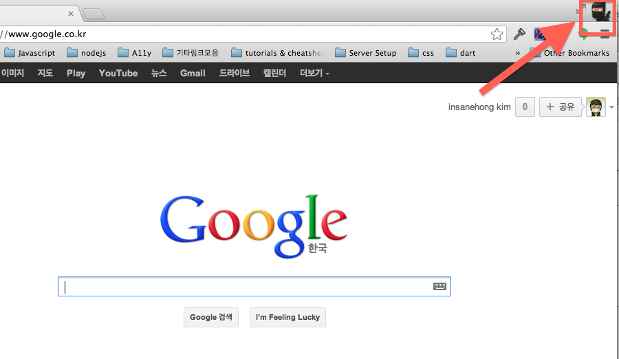
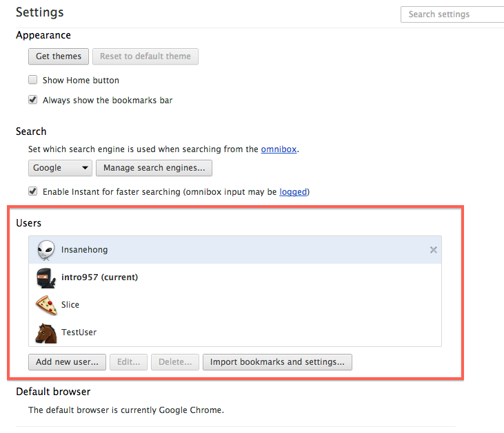
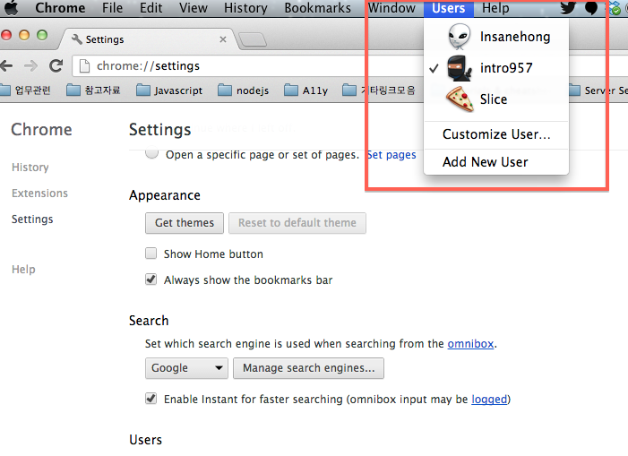
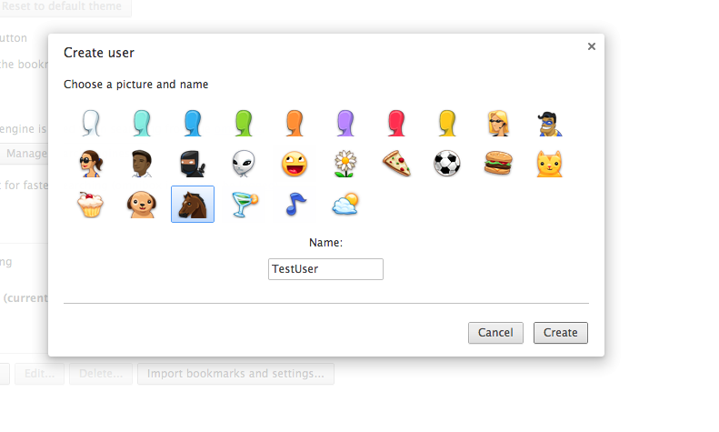
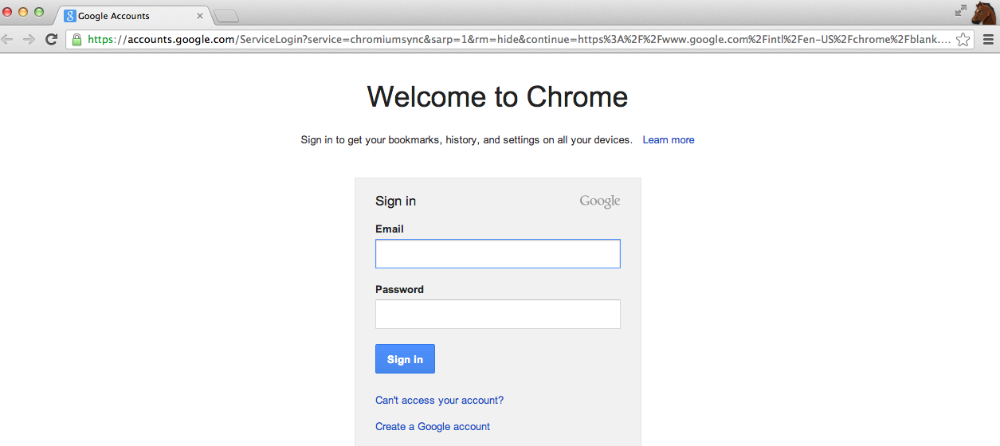

About Author

Insanehong
blog: http://insanehong.kr
twitter: @insanehong
github: insanehong.github.com
- NAVER Corporation, Front-End Engineer(2013~)
- Like Javascript, Dart, HTML5, CSS3,Responsive Web, Haroopress, Frends, Lean Startup, Open Source
- Hackrslab co-founder
- About me http://about.me/insanehong
About this Article
Date Released:
Wednesday, May 22 2013 6:36 PM크롬 사용자 기능 사용하기
Chrome 사용자 설정
평소에 개발과 일상적인 웹서핑을 위해 주로 크롬과 파이어폭스 브라우저를 사용하고 있다. 디바이스마다 각각 동기화 까지 해논 상태라 어디서든 편하게 브라우저 설정을 따로 하지 않고도 이용하고 있다.
크롬을 사용하면서 가장많이 받는 질문은 브라우저 상단에 나온 이모티콘은 뭐하는 것이냐? 라고 하는 것이다.

대부분이 알고 있던 기능인줄 일았는데 모르는 분들의 의외로 많이 있었다. 그래서 이녀석에 대해 간단하게 글을 남겨보자고 한다.
사용자 설정이 언제 필요할가?
크롬을 사용하면서 업무용으로 필요한 환경세팅, 북마크, 익스텐션 기능등과 개인용으로 필요한 세팅은 다를 수 있고, 가정에서 사용할때 가족구성원끼리 각자 다른 환경 세팅으로 인하여 트러블이 생기는 경우도 있다.
하지만 크롬 브라우저의 User 기능을 이용하면 이는 간단하게 해결 되어진다.
사용자 등록 하기
크롬 환경설정에 들어가면 너무도 잘보이는 위치에 사용자 추가 버튼이 있다.

맥 사용자의 경우 환경설정을 따로 들어가지 않더라도 상단에 Users 를 클릭하게 되면 이미 등록된 사용자 리스트를 포함한 사용자관리에 관련 된 메뉴들이 나타난다.

편한방법을 선택하여 add new user 버튼을 클릭하여 새로운 사용자를 추가 하면 된다.

새로운 사용자가 생성되면 새로운 세션(새로운 브라우저 세션을 생성기 때문에 세션 공유가 되지 않는다.)을 소유한 모든 설정이 Default 로 세팅되어 있는 새창이 열리게 된다.

현재 선택된 사용자는 오른쪽 상단에 선택한 이모티콘으로 확인 가능하며 해당 이모티콘을 누르면 등록된 사용자 리스트가 열려 다른 사용자로 전환 할수 있다.
사용자가 전환 되면 북마크를 포함한 모든 크롬관련 정보가 해당 사용자의 설정으로 변경되어 진다.
너무 간단한 내용이라 뭐 글을 쓰기도 민망하지만 아무튼 알고 쓰면 좋은 기능이다. 몰랐던 분이 있다면 한번 써보시라.